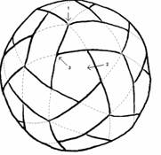
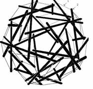
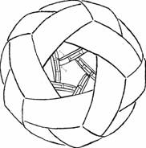
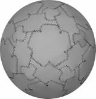

Inventor: John R Shearing: johnshearing@gmail.com (732) 406 6934
TITLE OF
INVENTION
Vacustat
Lifts Airships With Out Need For Lifting Gas
This Invention Is Freely Given To All People.
The basic idea was
outlined in an unsolicited proposal to NASA and the NIST on
At around the same time it was filed as patent application 10/342,767
This document was created from that patent application.
And see this later filing of the same
The patent application was rejected on the grounds that the idea is not novel.
While I disagreed with the Patent Office, this public posting prevents anyone else from patenting the idea and clears the way for placing the idea in the public domain.
Invention in a nutshell
|
Six Interlocking
Bands |
With Internal Strut
Supports |
Arranged Inside |
Form Novel Vacuum
Vessel |
|
 |
 |
 |
 |
0001 Most everyone involved with airships has
wondered if it would be possible to use vacuum bottles instead of helium filled
ballonets to provide lift for airships. After all, a vacuum is even lighter
than helium. And by using relief valves and vacuum pumps, vertical takeoffs and
landings would be possible.
0002 When constructing our vacuum bottles,
there is really only one important consideration. The bottles must be lighter
than the air they displace. This is
what gives the bottles positive buoyancy and allows them to float.
0004 So far, So good - except for one
thing: At sea level, the atmosphere
exerts the enormous crushing force of more than 2000 pounds per square foot
along the surface of the bottles.
0005 So using conventional materials, and conventional construction
techniques, there were two possible outcomes for your
efforts. Either the bottles were able to stand up to atmospheric pressure; in
which case, the bottles were too heavy to float. Or the bottles were light
enough to float, but were crushed under the weight of the atmosphere. In either
case, your airship never got off the ground.
0006 This document defines materials and methods that will facilitate the production of vacuum bottles that are lighter than the air they displace, while being strong enough to stand up to atmospheric pressure.
0007 Known in the prior art are spherical enclosures made either by using geodesic construction techniques or by joining spherically contoured sections together.
0008 In US patent number (3,063,521), Richard Buckminster Fuller describes his invention "Tensile Integrity Structures" (here after referred to as tensegrity structures) which is an indispensable component of my invention. But Fuller starts his discussion regarding the building of spheres, with an example using 270 struts and refers to this structure as a geodesic sphere tensegrity. He uses this structure to help the reader understand how it is possible to combine a structure's tension members with its compression members to form a single tension-compression unit in which the outermost surface of the unit provides the tension while the inner most surface provides the compression. It is this quality that defines a geodesic structure. And this quality explains why no internal columns or beams are seen inside geodesic structures. While geodesic structures are indeed tensegrity structures, they are only a small subset of structures that can be built using tensegrity. My invention explores the use of non-geodesic tensegrity structures and their use in creating spherical or semispherical enclosures that are stronger, easier to build, and cheaper to manufacture than is currently possible using geodesic techniques.
0009 In US patent number (4,113,206), David Wheeler describes a geodesic structure that is lighter than the air it displaces. The intent is to evacuate the air from inside the structure so that the structure will float in the atmosphere. But even with today's super strong and super light composite materials, a working model has never been built. The reason for this is that the atmosphere at sea level, maintains a crushing force of about 2000 pounds per square foot. And even today's composite materials cannot stand up to that force when configured as a geodesic structure. My invention explores the novel use of the spherical dodecahedron combined with non-geodesic tensegrity structures in order to create structures that are lighter than the air they displace while also being strong enough to stand up to atmospheric pressure.
0010 US patent number (5,529,239) describes a method for pressure forming metal plates to have a spherical contour. US Patent number (5,662,264) of the same inventors goes on to describe how these plates can be welded together. My invention explores the novel use of the spherical dodecahedron combined with non-geodesic tensegrity structures and their use in creating spherical or semispherical enclosures that are stronger, easier to build, and cheaper to manufacture than is currently possible using the previously mentioned techniques.
0011 The purpose of this invention is to:
0012 This will be accomplished by combining the use of super strong, super light materials such as graphite, which exhibit most of their strength in tension with the geometry of tensegrity, which takes maximum advantage of a material's tensile strength.
0013 Figure 1 is a B/W photograph of the outside of this invention in one of its preferred embodiments.
0014 Figure 2 shows the beginning step in construction of the spherical vessel. This figure shows six strips of some flexible airtight material laid out flat in the pattern as illustrated.
0015 Figure 3 shows the second step in forming the vessel, where one end of each of the 6 bands is joined to their opposite end to form 6 circles, while at the same time, weaving these circles about each other to form a sphere.
0016 Figure 4 shows that the cross-sectional contour of the bands are spherical. This facilitates fitting the bands together to form a perfect sphere.
0017 Figure 5 shows the simplest possible tensegrity structure. This figure has been reproduced from US patent 3,169,611.
0018 Figure 6 shows a spherical tensegrity structure.
0019 Figure 7 shows a strut to be used as an internal support for the invention shown in figure 1.
0020 Figure 8 shows that the end of the strut must have the same spherical contour as the inside of the sphere it supports.
0021 Figure 9 shows struts positioned inside a spherical dodecahedron.
0022 Figure 10 just shows a closer view of figure 7.
0023 Figure 11 shows strut positions from a different angle
0024 Figure 12 shows a pentagonal cover with slits cut into it.
0025 Figure 13 shows a disk shaped cover with slits cut into it.
0026 Figure 14 shows a pentagonal cover and a disk shaped cover twisted into place.
0027 Figure 15 shows one preferred embodiment of the outside surface of a completed spherical container.
0028 Figure 16 is a B/W photograph of a tensegrity dodecahedron.
0029 Figure 17 is a B/W photograph of struts attached to the inside of a spherical dodecahedron to form a tensegrity dodecahedron.
0030 This invention defines a novel way of building and supporting a spherical container. This said container would be a suitable structure to use as a building, a pressure vessel, a vacuum vessel, or a container to store liquids.
0031 Figure 1 is a B/W photograph of the outside of this invention in one of its preferred embodiments.
0032 Figure 2 shows the beginning step in construction of the spherical vessel. This figure shows six strips of some flexible material laid out flat in the pattern as illustrated. The bands can be made of any relatively stiff airtight and weldable material such as steel, aluminum, or titanium. The bands can also be made of relatively stiff composite materials such as Kevlar, graphite, or fiberglass. But in that case, seams will be sealed using composite manufacturing techniques. And lastly, the bands can be made from a fabric of very thin light materials similar to those used in the manufacture of sails for racing yachts. Again the materials would be graphite, Kevlar, or fiberglass, but of a lighter gage. In that case, the fabric will not be stiff and will need to be supported as the ends of the 6 bands are joined and woven together to form a sphere The width of each band is approximately 1/5th of the spheres diameter. By playing with this number, you can control how tightly the bands fit together.
0033 Figure 3 shows how the vessel is formed by joining one end of each of the 6 bands to their opposite end to form 6 circles while at the same time, weaving these circles about each other to form a sphere. At first a little trial and error is necessary, but with a little practice it is quite easy to do because most of the weaving is accomplished by following the layout in figure 2. This structure has 20 points along its surface where the edges of 3 bands intersect (1) and 12 pentagonal shaped openings (2) and 60 vertexes created by the 12 pentagonal openings (3). From this point on, I shall refer to this structure as a spherical dodecahedron in honor of its 12 pentagonal openings.
0034 Although not demonstrated in the preferred embodiment of Figure 1, figure 3 shows, that by using the lower band as a guide to cut along the dotted lines, removing the top section, and then welding or joining the bands in some manner again along the same dotted lines, it is possible to make structures with a perfectly spherical contour and of uniform wall thickness because there will no longer be any places where the bands overlap. The removed material can then be used to fabricate the pentagonal covers.
0035 Figure 4 demonstrates that by giving the bands a spherical cross section defined by swinging a radius who's length is equal to the radius of the band and who's origin is at the center of the band, in a plane which is parallel with the band's axis, it is possible to achieve a perfect fit for when it comes time to assemble the bands into a spherical dodecahedron and seal the seams. This is not a necessary operation, but it does make the job of sealing the structure easier.
0036 Figure 5 shows the simplest
possible tensegrity structure. This figure has been reproduced from Kenneth
Snelson's
0037 Figure 6 shows a spherical tensegrity structure where the interplay between the 30 tension members (1), (cables of some type) and 30 compression members (2), (struts of some type) join to create a strong and resilient structure in the shape of a sphere. This structure is referred to by those familiar in the art, as a tensegrity dodecahedron. This structure is in no way a geodesic structure because the tension members are distinctly separate from the compression members. Many people have created sculptures using tensegrity. But except for geodesics, (a special case of tensegrity), I have yet to see anyone use the principals of tensegrity for anything useful. But one of the most important concepts defined by this invention is the novel combination of this tensegrity dodecahedron (figures 6 and 16) with the spherical dodecahedron shown in Figure 3, to form a new structure that enjoys the qualities of the previous two while gaining other qualities that exist in neither alone. Buckminster Fuller called this synergy. Figure 16 shows a black and white photograph of this same structure.
0038 Figure 7 shows one possible strut configuration that could meet the aims of combining the spherical dodecahedron (Figure 3), with the tensegrity dodecahedron (figures 6 and 16).
0039 Figure 8 shows one important quality of the strut. And that is, the ends of the struts must have the same spherical contour as the inside of the spherical dodecahedron of Figure 3. The length of the strut is another consideration. Experimentation has shown the length to be about 1/6th the circumference of the spherical dodecahedron of Figure 3.
0040 Figure 9 shows how the struts (1) are positioned inside the spherical dodecahedron by locating the ends with reference to the vertexes (2) of the pentagonal openings. The other end of the struts, (shown in Figure 11), are located with reference to one of the vertexes of an adjacent pentagonal opening as dictated by the form of the tensegrity dodecahedron depicted in figures 6 and 16. What we are doing in effect is placing a tensegrity dodecahedron inside of spherical dodecahedron, where the struts handle compression and the bands of the spherical dodecahedron provide the tension and the spherical shape. Also, we are taking advantage of the fact that there is a one to one correspondence between the ends of the 30 struts (1) and the 60 pentagonal vertexes (2). And as such, we have an easy way to locate the correct positions for attaching the end points of the struts (1) to the spherical dodecahedron of Figure 3 so as to form a tensegrity dodecahedron, figure 6, inside.
0041 Figure 10 just shows a closer view of Figure 9.
0042 Figure 12 shows a pentagonal cover with five slits (1) cut into it that allow the cover to be twisted into place in order to facilitate precise location of the cover with respect to the center of one of the 12 pentagonal openings.
0043 Figure 13 shows a disk shaped cover with three slits cut into it (1) that allow the cover to be twisted into place in order to facilitate precise location of the cover over the center of one of the 20 places where three bands intersect.
0044 Figure 14 shows a pentagonal cover (1) and a disk shaped cover (2) twisted into place. By installing these covers around the structure and sealing all seams, it is possible to create an airtight enclosure.
0045 Figure 15 shows one preferred embodiment of the outside surface of a completed spherical container. Figure 1 is a photograph of the same structure. This type of structure consisting of 6 bands (1) enclosed by 12 pentagonal covers (2) and 20 disk shaped covers (3) shall from here on be referred to as a spherical dodecahedral enclosure. And if said container is supported by a collection of struts whose end points if connected would form a tensegrity dodecahedron (previously defined by Figures 6 or 16), then the structure will from here on be defined as a spherical dodecahedral enclosure with a dodecahedral tensegrity support. This is my invention.
0046 As a building, this said container offers an alternative to geodesic construction. Such a building may or may not make use of the internal struts shown in figure 8. But the use of six bands enclosed by twelve pentagonal covers and 20 disk shaped covers previously defined as a spherical dodecahedral enclosure, offers many advantages over current geodesic techniques. Including shorter construction times, lower construction costs, and a greater strength to weight ratio. By aligning one of the of the 6 bands horizontally and parallel with the ground, it is possible to create a hemi-spherical dodecahedral enclosure with all the same advantages of a fully spherical dodecahedral enclosure and with the extra advantage that it can not roll away.
0047 If a building was formed from a dodecahedral enclosure and was supported by a dodecahedral tensegrity structure, then the building would have the extra ability to standup to great external pressure. This would make the building suitable as an underwater structure. If this same structure were also made from super strong lightweight fibers such as graphite, and of sufficient diameter, then it should be possible to create a structure that is lighter than the air it displaces while still being strong enough to stand up to atmospheric pressure. In either case, the structure would be very resilient and forgiving of impact and deformation because, tensegrity structures have a remarkable ability to distribute stresses throughout their entire structure.
0048 Although it is not depicted in any of the drawings, it is important to note that the dodecahedral tensegrity supports could also be located on the outside of the spherical dodecahedral enclosure, provided that they have enough curvature so as not to interfere with the enclosure or the end points of other struts. The important thing is that the points where the struts connect to the enclosure, if connected with strait lines, can define a dodecahedron.
0049 As a pressure vessel, this said container offers a better alternative to forming and welding spherically contoured segments together because the number of pieces required to be fitted, and the total length of welds would be reduced. Also, because the parts of a spherical dodecahedral enclosure with a dodecahedral tensegrity support are self aligning, the time required to fit the parts together would be reduced when compared to the process of building a spherical container by forming and welding spherically contoured segments together. All this amounts to reduced cost.
0050 A pressure vessel made from Kevlar or other super strong super lightweight fiber would make an excellent structure for use in outer space. This is because it would be light enough to launch into space, and once inflated, would be very resistant to impacts by virtue of the material and the tensegrity structure's remarkable ability to distribute stresses.
0051 Although it is not depicted in any of the drawings, it is important to note that by varying the width of the some of the 6 bands as we move along their length, and by playing with the length of others, it is possible to create other bodies of revolution besides the sphere. But in my claims, I will refer to these other bodies of revolution as the spherical dodecahedron.
0052 The remarkable ability of this spherical dodecahedral enclosure (figures 1 and 15) supported by a tensegrity dodecahedron (figures 6, 9, 10, 11 and 16), to standup to external pressure, makes it ideal as a vacuum vessel. And with the invention of super strong, super lightweight materials such as graphite and Kevlar, we may soon be able to make vacuum vessels that are lighter than the air they displace. This would pave the way for a new airship/air-crane industry that is no longer dependent on helium for lift. Such airships and air-cranes would be less expensive to fly. Also, they would able to control their buoyancy without the need to dump expensive helium in order to sink, or dump ballast in order to rise.
CLAIMS
I claim:
Claim 1 (Canceled)
Claim 2 (Canceled)
Claim 3 (Canceled)
Claim 4 (Canceled)
Claim 5 (Canceled)
Claim 6 (New)
A
spherical dodecahedral enclosure comprised of 6 bands of airtight material
woven together to form a sphere having 12 pentagonal openings and 20 places
where 3 bands intersect and also having 12 covers suitably shaped to cover the
12 pentagonal openings and attached in such a way as to form an airtight seal
and also the 20 intersections of said enclosure to be covered and or sealed in
such a way as to form an airtight seal and all other seams of said enclosure to
be sealed in such a way as to make the said enclosure, airtight.
Claim 7 (New)
A spherical dodecahedral enclosure according to claim 1 wherein there are 12 pentagonal covers each having 5 slits that will be twisted and locked into place over each of the 12 pentagonal openings in order to center the covers over the center of the pentagonal openings in the said spherical dodecahedral enclosure.
Claim 8 (New)
A spherical dodecahedral enclosure according to claim 1 wherein there are 20 disk shaped covers, each having 3 slits, that will be twisted into place over each of the 20 places on the enclosure where 3 of the bands intersect to facilitate the location of the covers directly over the said points of intersection on the said spherical dodecahedral enclosure.
Claim 9 (New)
The novel combination of an internal or external tensegrity dodecahedral framework with any spherical structure in such a way that the said tensegrity dodecahedral framework is applied to the spherical structure so as to play the part of the compression elements of a tensegrity dodecahedron while allowing the surface of the sphere to play the part of the tension members of the same tensegrity dodecahedron.
Claim 10 (New)
The novel combination of the spherical dodecahedron with the tensegrity dodecahedron in which the 60 vertexes of the pentagonal openings of the spherical dodecahedron are used to locate the points of attachment for the 30 struts of the supporting tensegrity dodecahedron.
A spherical container having a shell formed by 6 bands, interwoven in such a way as to create 12 pentagonal openings spaced evenly around the sphere. 12 pentagonal covers, 20 disk shaped covers, and 30 struts. Building materials for the invention can be composite materials such as graphite or fiberglass fibers wherein the parts are joined with stitching and then permanently bonded together with a suitable adhesive such as epoxy to form an airtight container. The invention can also be fashioned from sheets of weldable material, wherein all seams are welded together to form an airtight container. The 30 struts are placed inside the sphere with their end points located with reference to the vertexes of the pentagonal openings in such a way as to form a tensegrity dodecahedron. This structure may be used as a building, a pressure vessel, a vacuum vessel, or a container.